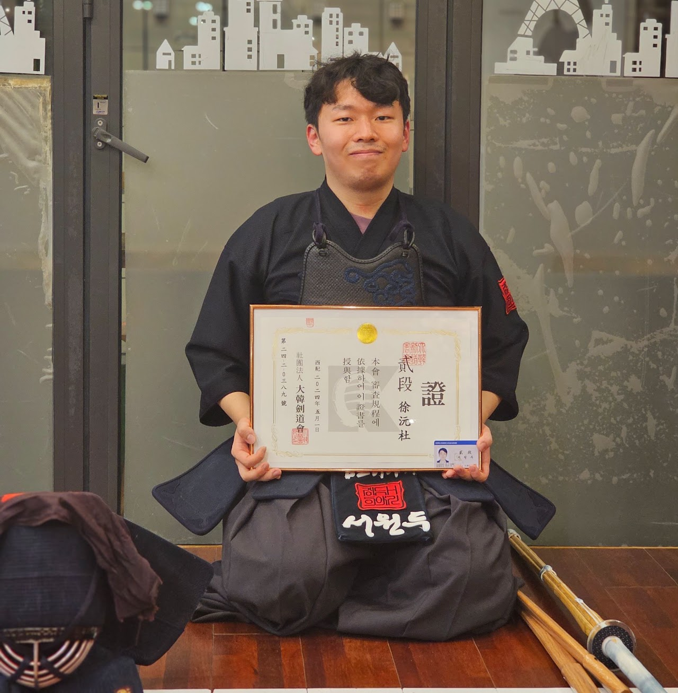
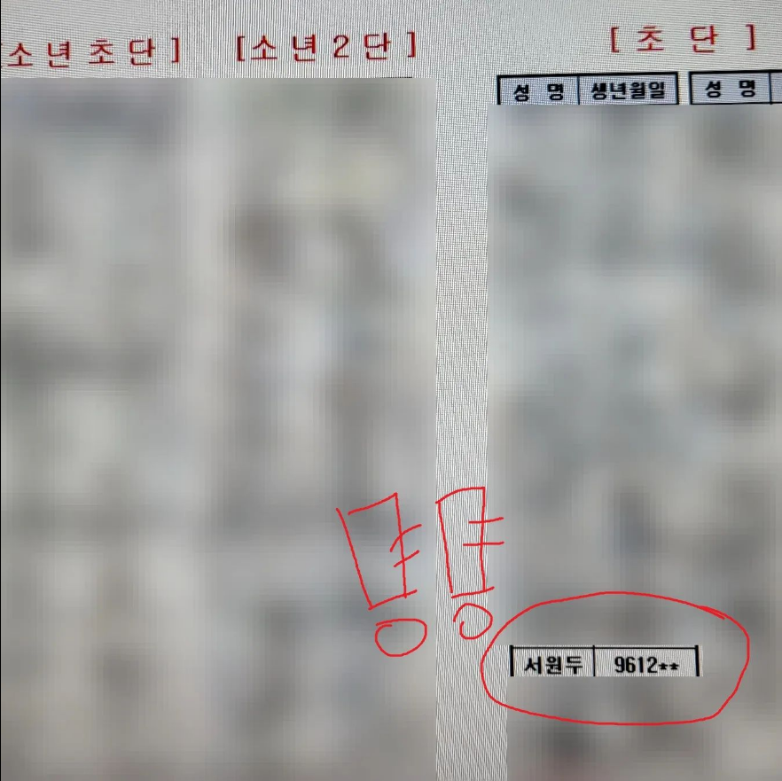
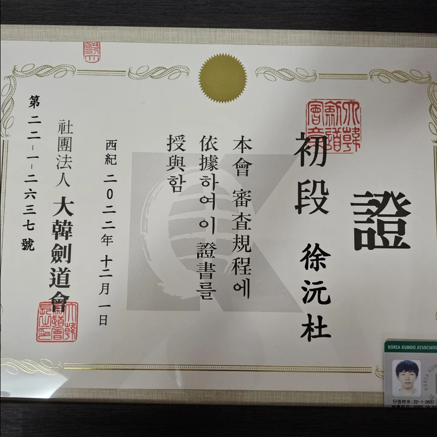
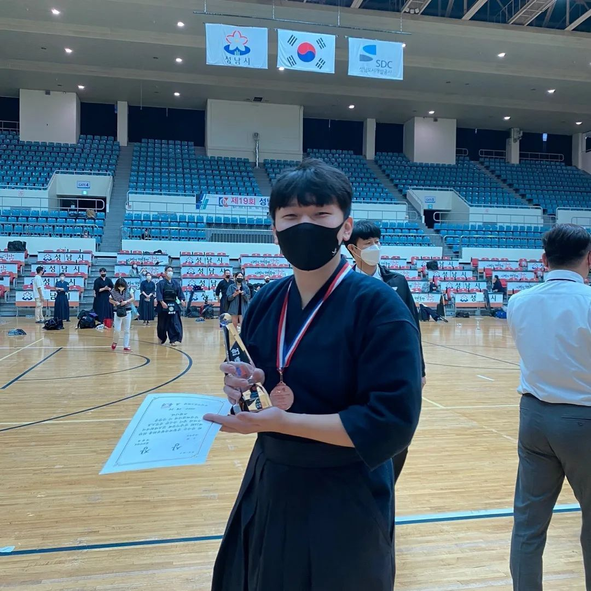
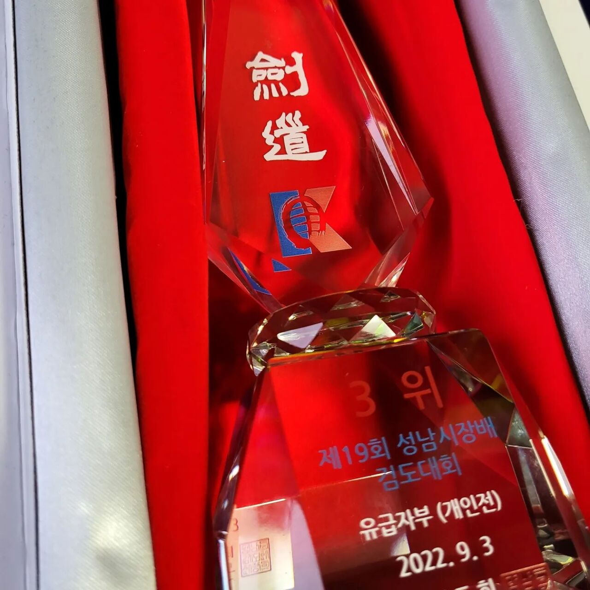
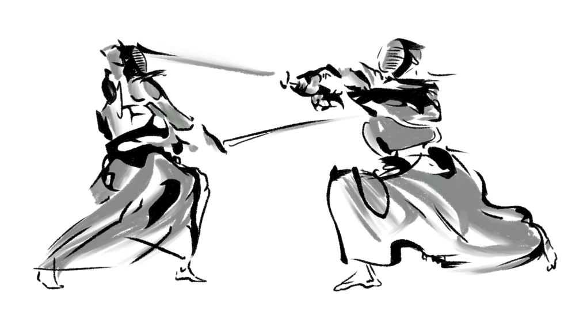

[2024.06.28]
I was promoted to Nidan (貳段) on my first attempt! Going for Sandan (參段) next!

Way of the Sword
I was promoted to Nidan (貳段) on my first attempt! Going for Sandan (參段) next!

After two attempts, I finally (and thankfully) earned Shodan (初段)! Ready for the next challenge!


I won third place in the Kyu division at the 19th Seongnam-si Kumdo Convention! It was an awesome experience!



Kendo is a Japanese martial art originating from the training of samurai in the art of swordsmanship. Modern Kendo training involves practitioners using a bamboo sword (竹刀) and wearing protective armor (護具).
The Japanese characters for Kendo (劍道) translate to The Way of the Sword, and Kendo is characterized by the discipline of human character through training and the application of the sword (刀). Through training, students strengthen both body and mind while learning the core teachings of the samurai: to treat people with respect, to strive for self-development, and to contribute to the peace and prosperity of humanity.
(Source: Canada Kendo Federation)
(Source: Korea Kumdo Association)